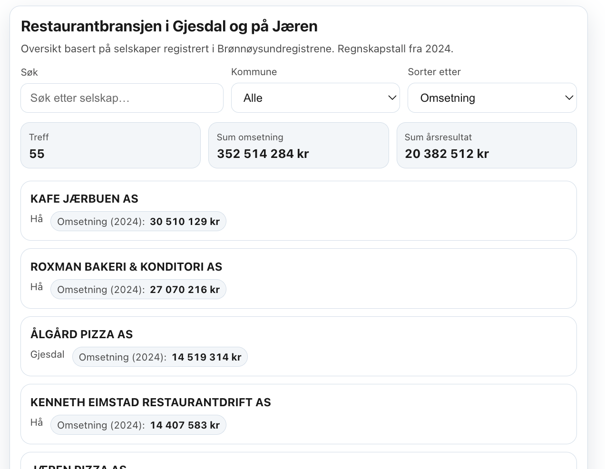
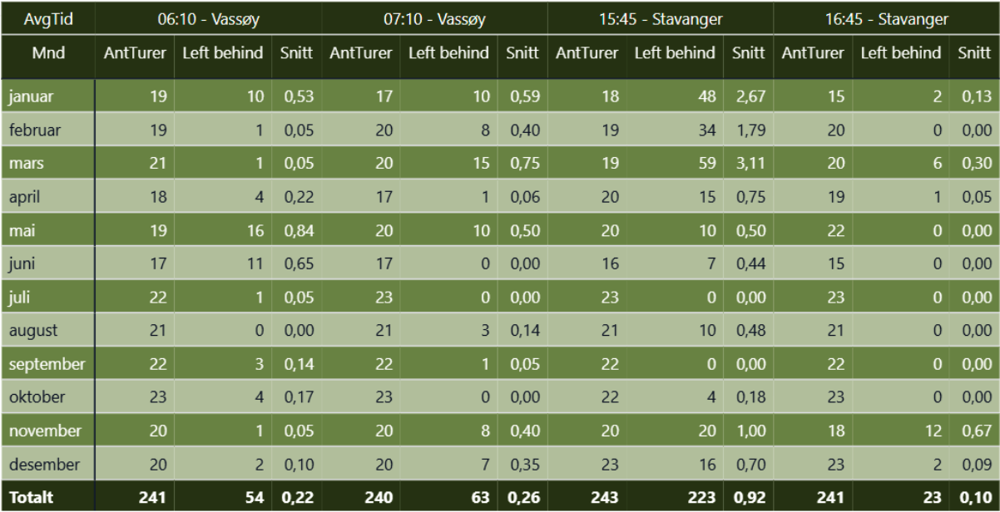
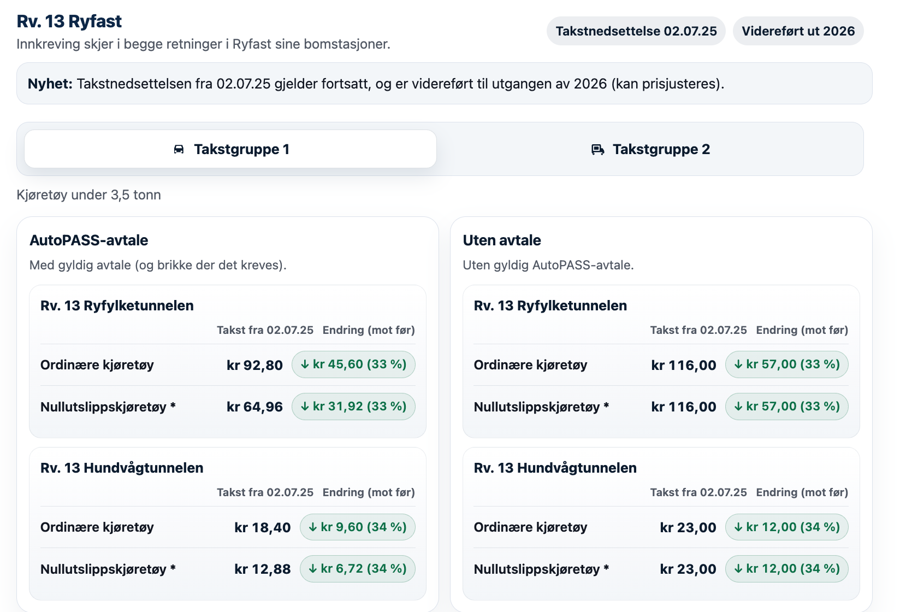
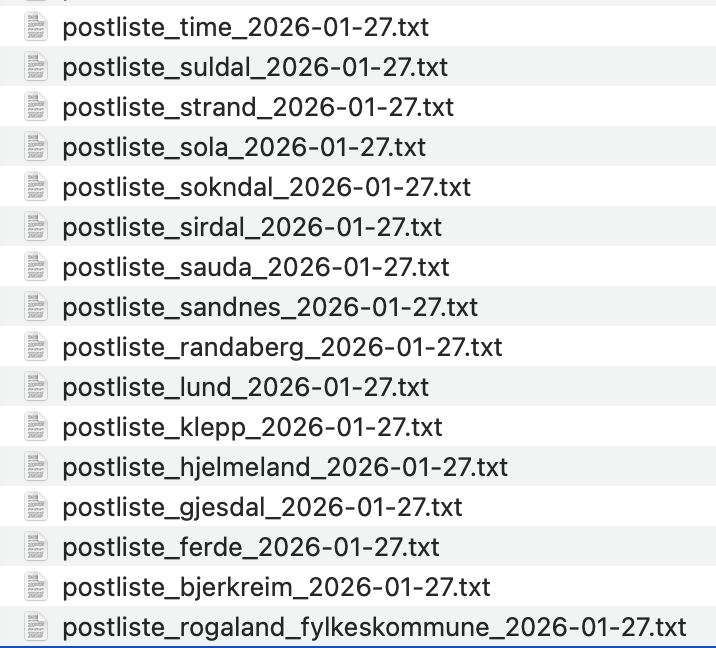
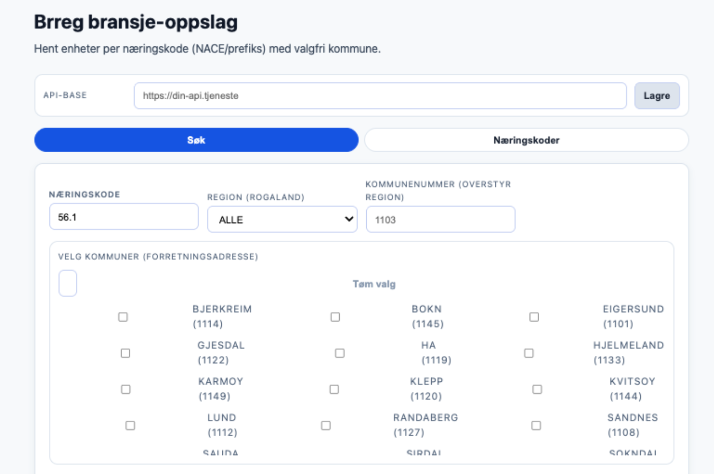
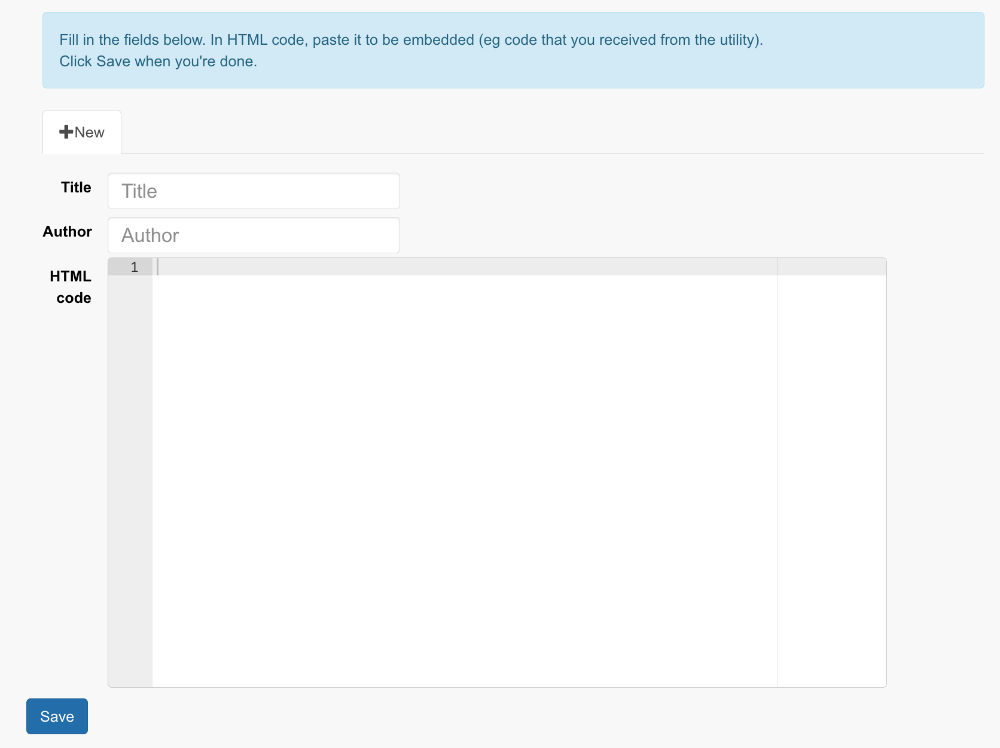

Hva er «vibe coding»?
Intro
Konseptet med vibbekoding er enkelt:
Du lar AI-en være utvikler, og kode for deg
Inspirert av Viking: Lag gull konfetti som drysser
🛠️ Slik ble denne siden laget
Effekt: Gull konfetti som drysser ned
Prompt:
Teknisk løsning: CSS-animasjon med @keyframes. 13 <span>-elementer med ulik animation-delay og left-posisjon. Animasjonen roterer og flytter elementene nedover med translateY.
Forsinkede busser
Oversikt over forsinkelser i sanntid
https://editorial.aftenbladet.no/2026/sa-entur-delays/index.html (passordbeskyttet)
🛠️ Slik ble denne siden laget
Idé: Andreas Askildsen
Problemstilling: Andreas sjekket manuelt i Kolumbus-appen og gikk inn på den enkelte rute for å se om det var forsinkelser.
Slack-melding fra Andreas:
Data: Entur API (sanntidsdata for kollektivtrafikk)
Teknisk løsning: Henter data fra Entur, filtrerer på forsinkelser, og viser i en enkel oversikt. Hostet på GitHub Pages.
Restauranter i Sandnes/Stavanger
Data fra Brønnøysund
🛠️ Slik ble denne siden laget
Journalist: Eilin Lindvoll
Sak: Sulten på suksess
Data: Brønnøysundregistrene (NACE-koder for serveringssteder)
Teknisk løsning: Inline HTML-widget (CSS + JS) limt inn i mm.schibsted.media. Data hentes ut fra Brønnøysund, filtreres (kommune/næringskode) og legges inn som JSON i integrasjonen. JS bygger UI-et (søk, kommune-filter, topp-5) og rendrer lista med <details>-elementer.
Restauranter Jæren/Gjesdal
Data fra Brønnøysund
Lokale bransjedata samlet i enkel oversikt.
🛠️ Slik ble denne siden laget
Journalist: Tom Gøran Haukalid
Sak: Salget av kjøttkaker eksploderte etter at Haaland var innom kafeen
Data: Brønnøysundregistrene (NACE-koder for serveringssteder)
Teknisk løsning: Uthenting av bransjedata, filtrert på kommuner og næringskoder. Inline HTML i mm.schibsted.media.
Gjenstående biler på Vassøy-ferja
Data: Kolumbus
Forklarer gjenstående biler med visuelt grep.
Løsning:
🛠️ Slik ble denne siden laget
Journalist: Tor Inge Jøssang
Sak: Møter opp en halvtime før avgang, men kommer ikke med
Data: Skjermdump av regneark fra Kolumbus
Teknisk løsning: Inline HTML-widget (CSS + JS) limt inn i mm.schibsted.media. Data ble hentet fra skjermdump/regneark fra Kolumbus og strukturert til et JSON-datasett (måneder/avganger). JavaScript bygger filtrering (avgang/retning), KPI-er og tabell med enkel stolpevisualisering.
Ryfast-takster
Eksempel · Tabell
Takstendringer gjort lesbare i tabellformat.
🛠️ Slik ble denne siden laget
Kilde: Ferde
Data: Ferde/Statens vegvesen takstvedtak
Teknisk løsning: Inline HTML-widget (CSS + JS) limt inn i mm.schibsted.media. Widgeten er «scopet» under en egen wrapper-id for å unngå stilkollisjoner, og bruker JavaScript til å bytte takstgruppe og regne ut/visuelle endringer (før/etter) for bomstasjonene.
Så ble det vinter og snø
🛠️ Slik ble denne siden laget
Journalist: Karl Almedal
Sak: Hvor er de beste akebakkene?
Data: Lesertips (drøyt 100 forslag)
Teknisk løsning: Inline HTML i mm.schibsted.media med Leaflet-kart (OpenStreetMap). Leseren klikker i kartet, plasserer en markør og skriver en kort beskrivelse (ingen navn/personopplysninger). Klikk fyller inn lat/lng og åpner et enkelt skjema. Innsending går via Google Apps Script til Google Sheets. Eksisterende tips lastes inn ved å lese et publisert CSV-uttrekk fra arket og plotte markører på kartet.
Bygninger i strandsonen
Eksempel · Illustrasjon med telleverk
🛠️ Slik ble denne siden laget
Journalist: Tor Inge Jøssang
Sak: 12.000 bygg fikk ja til tross for forbud
Data: SSB/Kartverket (bygningsdata)
Teknisk løsning: Inline HTML-widget (CSS + JS) limt inn i mm.schibsted.media. JS animerer både telleverk og en enkel linjegraf (SVG) når widgeten scroller inn i viewport (IntersectionObserver).
Stavanger kommunes eiendommer
🛠️ Slik ble denne siden laget
Data: Stavanger kommune (eiendomsdata hentet fra Lytix som regneark)
Teknisk løsning: Eiendommene ble eksportert som GeoJSON og importert i Mapcreator. Kartet bygges på Leaflet med OpenStreetMap som bakgrunnskart, og GeoJSON-laget plottes med klikkbare popups (bydel, gnr/bnr, areal og evt. adresse/merknad). Alt kjøres i nettleseren (ingen backend), og kan publiseres som inline HTML.
Slack-varsling når konkurrenter legger ut nyheter
Automatisert overvåking
Eksempel på varsling i Slack når konkurrenter publiserer nye saker.

🛠️ Slik ble denne siden laget
Data: RSS/HTML fra konkurrenters forside/feeds (tittel, lenke, publiseringstid)
Teknisk løsning: En planlagt jobb (cron/GitHub Actions/Cloud Scheduler) henter og parser feedene, dedupliserer mot sist kjente artikler og sender melding til Slack via Incoming Webhook eller Slack API. Varslene grupperes per kilde og inneholder klikkbare lenker.
Postliste-bot
Automatisert overvåking
Skraping av postlister (kommuner, fylkeskommune, Ferde m.fl.) med nedlasting per kilde for videre KI-bearbeiding.
🛠️ Slik ble denne siden laget
Data: Postlister fra kommuner, fylkeskommune og andre offentlige aktører
Teknisk løsning: Script som går gjennom en liste med kilder/URL-er, laster ned postlista per kilde (ett dokument per kommune/aktør) og lagrer som tekst/HTML/PDF for videre bearbeiding.
Videre planer: KI-analyse av filene (oppsummering, kategorisering/tematisering og «hva er nytt?») og automatisk Slack-varsling når det dukker opp relevante saker.
Uthenting av data fra Brønnøysund
Datagrunnlag for restaurant- og bransjeoversikter: Uthenting av data fra Brønnøysund som datagrunnlag til å lage oversikt over restauranter og andre bransjer (under konstruksjon – kjøres foreløpig bare lokalt hos meg).
🛠️ Slik ble denne siden laget
Data: Brønnøysundregistrene (Enhetsregisteret)
Teknisk løsning: Lokalt script som henter enheter per næringskode (NACE) og kommune, normaliserer felter (navn, adresse, orgnr, bransjekode) og eksporterer til CSV/JSON for videre bruk i lister og integrasjoner (som restaurantoversikten).
Når jojo er nede med blank skjerm
Mulig å lage sin egen transkribent
🛠️ Slik ble denne siden laget
Data: Lydfiler / opptak (WAV/MP3/M4A)
Teknisk løsning: Lokal prosess som kjører tale-til-tekst (f.eks. Whisper) og eksporterer transkripsjon til tekst/SRT.
Dagsorden-bot: Politiske møter (neste 10 dager)
🛠️ Slik ble denne siden laget
Data: Skraping av møtekalendere fra kommuner og fylkeskommune
Teknisk løsning: Python-script som henter møter fra offentlige kalendere og aggregerer dem. Kjøres på cron-schedule. Bot-en publiserer også en oversikt over hva som skrapes (antall møter per kilde/kommune):
Oppsummering per kommune (Ryfylke/Dalane): Arrangementer-SA-kalender · Bjerkreim kommune · Bymiljøpakken · Eigersund kommune · Ferde · Hjelmeland kommune · Lund kommune · Rogaland fylkeskommune · Sauda kommune · Sirdal kommune · Sokndal kommune · Strand kommune · Suldal kommune
Oppsummering per kommune (Nord-Jæren/Jæren): Turnus-kalender · Gjesdal kommune · Hå kommune · Klepp kommune · Kvitsøy kommune · Sandnes kommune · Sola kommune · Stavanger kommune · Time kommune
Rutekutt
Fra regneark til integrasjon (inline HTML)
🛠️ Slik ble denne siden laget
Fra regneark til integrasjon (inline HTML): Fra regneark til ferdig integrasjon: KI hjelper med å strukturere data og generere ren HTML som kan limes rett inn i mm.schibsted.media.
Data: Regneark (parti/vedtak/tall)
Teknisk løsning: Regneark → KI rydder/standardiserer kolonner → genererer HTML (tabell/kort) med enkel CSS → HTML limes inn som inline HTML-integrasjon i mm.schibsted.media.
Vibbekoding
🛠️ Hva som skal til
1) Idé: Definer hva du vil forklare/visualisere ("en vits", et datapunkt, et kart, en liste).
2) Kilde: Finn en enkel kilde (CSV/regneark, API, embedkode eller skjermdump).
3) Prompt: Beskriv ønsket resultat i klart språk (målgruppe, mobilvisning, hva som er viktigst, og hvilke felter som skal vises).
4) Generer: Be KI-en lage HTML/CSS/JS (helst mobile-first) og pakke alt i én embed som ikke kolliderer med resten av siden.
5) Lim inn: Bruk enten embed-kode fra et verktøy (Mapcreator/Datawrapper) eller inline HTML i mm.schibsted.media.
6) Sjekk: Test i Chrome/Safari, sjekk æ/ø/å, og pass på at det ikke blir scroll-trap eller tregt på mobil.
7) Iterer: “Casino-knappen” er at du sitter og trykker «godkjenn» når Codex/Gemini/Claude spør — små endringer og rask feedback helt til det sitter.
Fra regneark til integrasjon
Inline HTML i mm.schibsted.media
Embed → integrasjon: Vi kan hente embed-kode fra Mapcreator, Datawrapper og andre verktøy og lime den inn i mm.schibsted.media for å lage en integrasjon.
Problem: Vi får ofte tabeller/oversikter som skjermdump eller regneark.
…eller lage koden selv: Med inline HTML kan vi skrive/generere koden selv og lime den inn direkte i mm.schibsted.media.
Teknisk: Integrasjoner i mm.schibsted.media kan være embedkode fra Mapcreator/Datawrapper m.fl., eller KI-generert inline HTML. Bygg mobile-first, hold deg til Aftenbladets blå profil, og pass på støtte for æ/ø/å.
Inline HTML betyr at vi skriver/genererer ren HTML-kode (f.eks. en tabell med <table>, <tr>, <td>) som kan limes direkte inn i et CMS-felt — uten eget repo, hosting eller byggsteg.
Arbeidsflyt: Skjermdump/regneark → KI strukturerer innholdet → HTML genereres → HTML limes inn i mm.schibsted.media → mm.schibsted.media renderer dette som en integrasjon som kan brukes i saken.
🛠️ Mer om inline HTML-oppsettet
Én fil: Hele integrasjonen er vanligvis én HTML-snutt med dokumentstruktur, inline CSS og inline JavaScript.
CSS-namespace: Pakk alt inn i en unik wrapper (f.eks. <div id="widget-xyz">) og prefix alle selektorer for å unngå kollisjon med avisens CSS.
Ingen globale variabler: JS kjøres i en IIFE (selvkjørende funksjon) og eksponerer ingenting globalt.
Dataflyt: Enten legges data inn som JSON i koden, eller lastes fra en publisert CSV/JSON-URL. Hold datakilder uten nøkler/hemmeligheter.
Mobil først: Unngå scroll-traps inni embed (fast høyde + overflow: auto). Bruk heller progressive løsninger ("vis flere").
Publisering: HTML-en limes inn som inline HTML i mm.schibsted.media og rendres direkte i artikkelen.
Hvilke verktøy?
Praktisk oppsett
- Editor: Visual Studio Code
- KI-assistent: GitHub Copilot / Claude / Gemini (avhengig av tilgang)
- Versjonskontroll: Git
- Repo/hosting: GitHub / Schibsted GHE Pages (statisk HTML)
- Publisering i saker: mm.schibsted.media (inline HTML + embed-koder)
- Visualisering: Mapcreator, Datawrapper, Leaflet
- Data/klipp og lim: Regneark (Excel/Google Sheets), CSV/JSON
- Tilgang til KI-modeller: LiteLLM (open-source Python-bibliotek som gir en felles API for LLM-er)
- Slack:
#liteLLM– be om tilgang (P.T. ca 170 i kanalen) - Automatisering: Python-scripts + cron (lokalt eller via Actions)
- Deling/varsling: Slack (incoming webhook / app)
🛠️ Slik ble denne siden laget
Teknisk løsning: Samme prinsipp som resten av decket: én statisk HTML-fil med inline CSS/JS, og bilder/illustrasjoner lagt ved i repoet.
Takk for meg
Spørsmål?